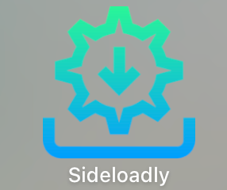

在 ios 下载第三方应用
CLAIM: 更新(2-22-2025), SideStore在iPhone上会闪退!! 以下操作无法保证稳定运行!
1 说明
下面的操作已在欧版iphone 16 pro ios 18.1上测试成功，但我个人感觉这个操作跟欧版iPhone没有什么关系，其他版本的iPhone大概率应该也可以，但是不保证。
本文参考链接：
2 What is side-downloading
ios系统不像安卓系统，只能在iOS store里面下载app。为了打破这点，有两种方法：越狱(jail breaking)或使用side-downloading。本文介绍后者。
Side-downloading 指通过不越狱的方法将 iOS 应用程序直接安装到 Apple 设备上，而不需要通过 App Store。有很多工具可以实现这点，具体参考list of tools。
其中 Scarlet 和 Signulous 的方法我没试过，另外三种 AltStore 需要你手机是欧版的、app地区是欧洲、你人也要在欧洲，所以没戏。最后两种 Sideloadly 和 Sidestore，后者下载软件需要连电脑，并且一般 side-downloading 的软件是要“续约(renew)”的，一般每周都要，而且 Sideloadly 这种方法还要连电脑 renew，不方便。所以我们采用最后一种 SideStore（只需要第一次的时候连电脑，后面在手机上下载和 renew）。当然我们也会用 sideloadly 下几个看看，毕竟这种比较简单。
3 Sideloadly
在 windows 或 mac 上下载安装 sideloadly，图标如下：

（可能要在 settings 中授权这个应用）
这个只是个将软件下载到 iPhone 中的工具，而软件在哪里获取呢？我们需要 .ipa 后缀的文件，可以在这里搜索你要的软件，如果没有就在google上搜，最好注意下安全性问题。
然后打开 sideloadly, 左侧选择你的 .ipa 文件，iDevice选择你的 iPhone（要用线将手机连到mac），输入你的Apple id（要记住这个ID，以后都用这个）和密码，点击start。（start 左边那个按钮是用来 renew 的，将来软件过期的时候就用同样的操作来 renew）
4 Sidestore
直接按照这里的指示下载安装即可：sidestore。
其中有一步要产生一个配对文件，记得要将mac连上手机后再运行。如果mac上一直运行不出来，在 terminal 当前文件夹中输入：
sudo ./jitterbugpair输入密码即可生成